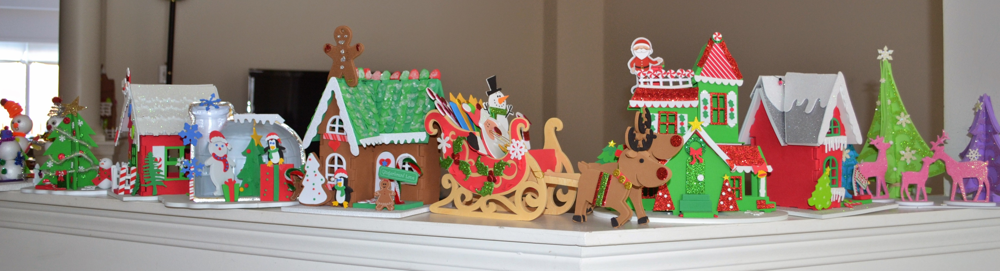

|
|
|
Holiday Crafts During the Christmas holidays, it is always a tradition to decorate the house with trees, lights, wreaths and other decorations. As well, I always enjoy making Chirstmas craft to add an extra bit of creativity in any room! Sitting down and making crafts with the family is a great way to bond during this festive time. Here are some examples of crafts we have made throughout the years: Foam Snowmen These crafts are very inexpensive to make and provide the opportunity to make a variety of different snowmen. Unfortunately not all of them can sit upright and we need to put them in condiment cups! Back to top.
Foam Village  Every house is a separate craft which I made with my brother when we were young children. We each made 1 every year for 4 years, giving a total of 8 sets to display. The materials in foam villages are easier to make for children due to the lack of a mess and easiness in assembly. Back to top.
Ceramic Village My mother and I painted these ceramic houses, then bought fake snow, village people and trees to make the scene. The houses include a school, Santa's Toy Shop, a post office, a blacksmith shop, a general store and a residential house. Back to top.
Stockings These are felt stockings that I stitched from hand for my mother's Christmas presents in 2012. Each stocking represents a member of our immediate family, based on our favourite holiday animals. Back to top.
Calendar
This felt calendar was stitched from hand by my mother and I. It is great for putting small trinkets, chocolates, and candy canes for a special treat each morning before Christmas day. Back to top.
|